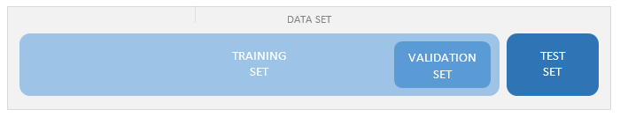

Enumerated domain indicating the purpose of a data item in the context of GeneXus Artificial Intelligence for custom models.  Values
Scope
AvailabilityThis domain is available as of GeneXus 16 upgrade 6. See also |
| Backlinks | |
| Data data type | Toc:GeneXus Artificial Intelligence |